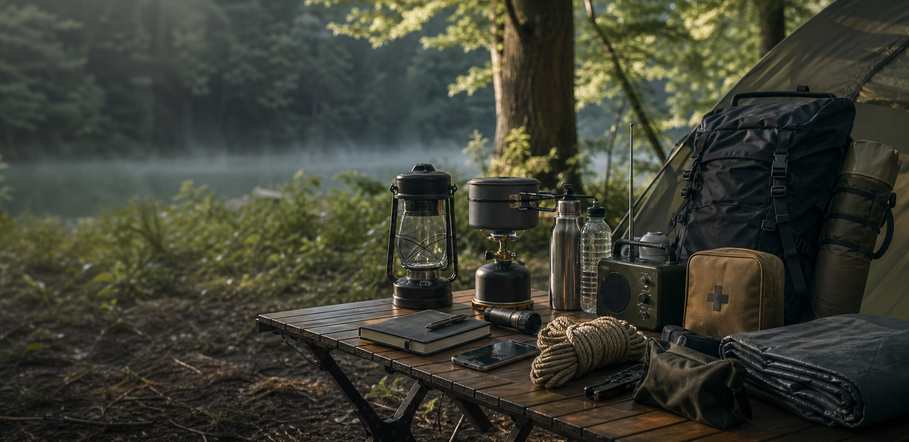

停電対策
明かり・電源を確保する
- LEDランタン
- モバイルバッテリー
- ポータブル電源

Outdoor gear, emergency ready
キャンプや車中泊で使うギアは、停電・断水・在宅避難にも強い味方。 “普段も使える防災”を軸に、道具の選び方と備え方を整理します。
Start with 4 essentials
Gear guide
停電対策
断水対策
避難生活
在宅避難
Use cases
Home shelter
まずは在宅避難を基準に、灯り・水・トイレ・睡眠の4領域を整えます。 キャンプ用品を持っている人ほど、足りないものが見えやすくなります。
Field notes
Gear check quiz
3 questions
記事を読む前に3問だけ答えると、停電・断水・避難生活のどこから整えるべきかが見えます。
地震
Readiness map
フィールド備えスコア
--%